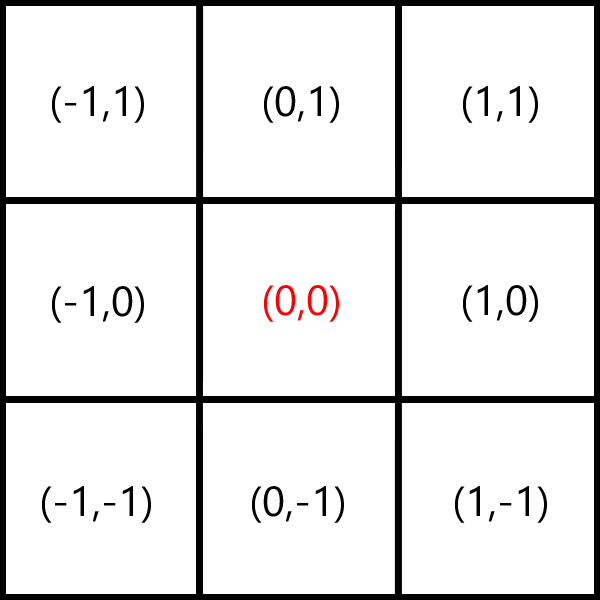

Gaussian Blur Tool by Alex Hutman
How does this work?
First we start with a RADIUSxRADIUS matrix. For example, the above is a matrix where the radius is equal to 3. The middle entry is the current pixel that we're looking at. We then plug each of these (x,y) values into the following equation to get a weighted matrix: